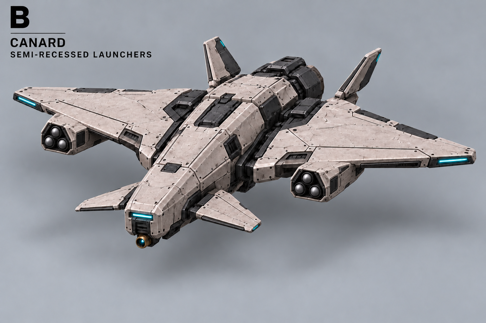
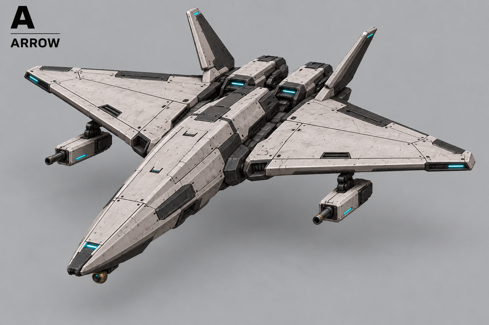
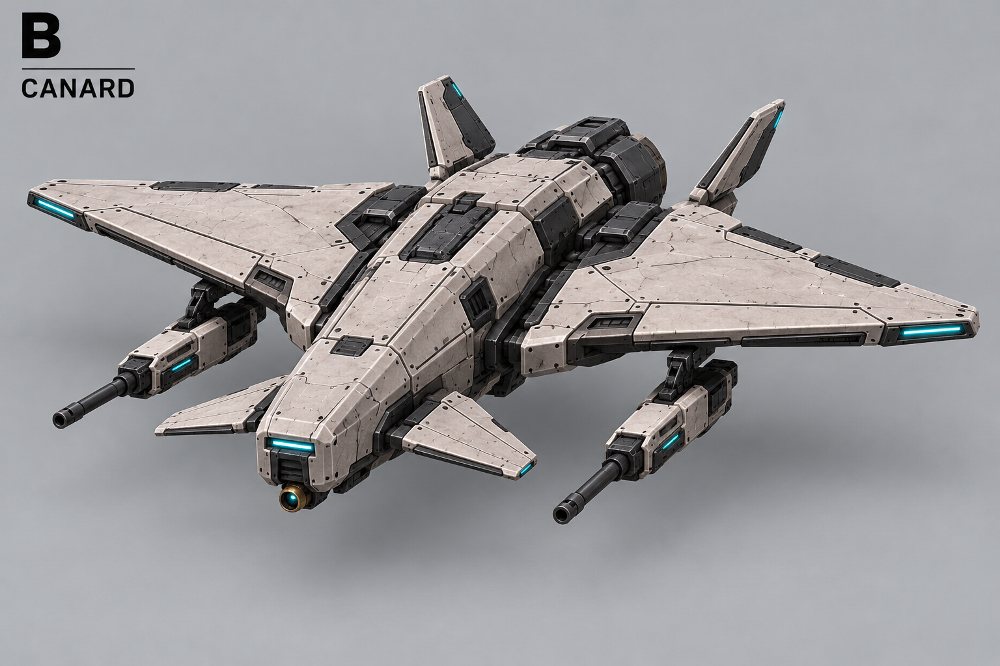
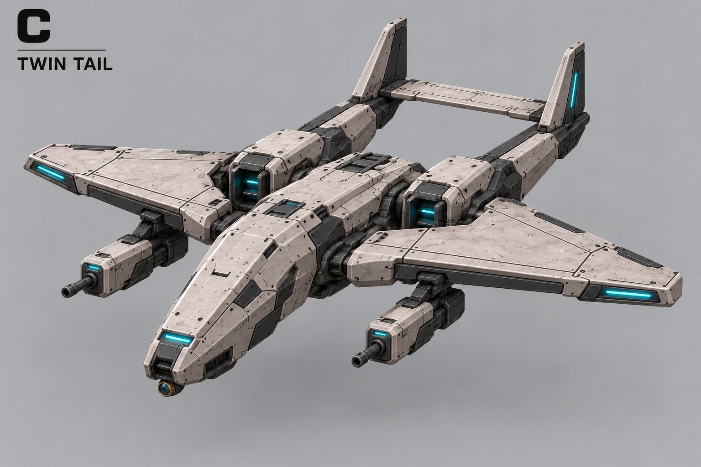
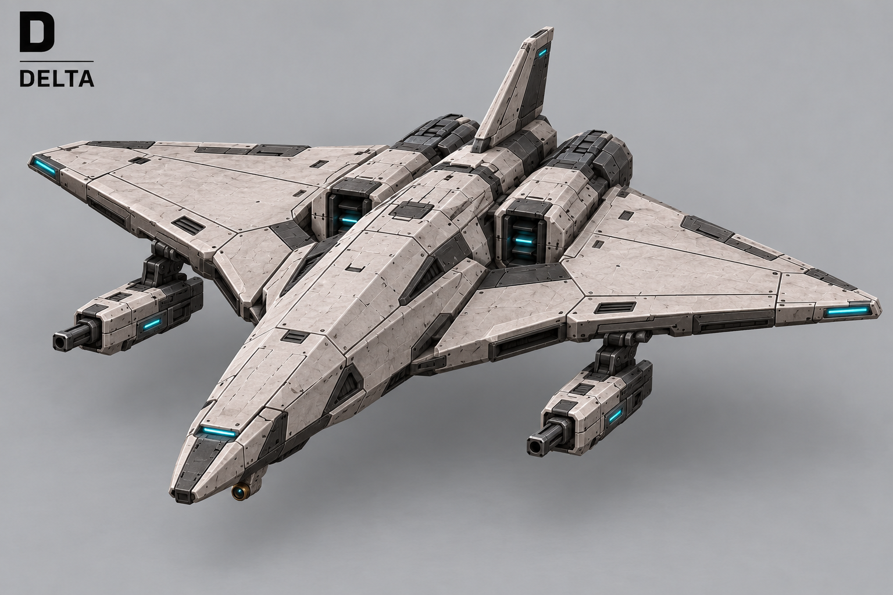
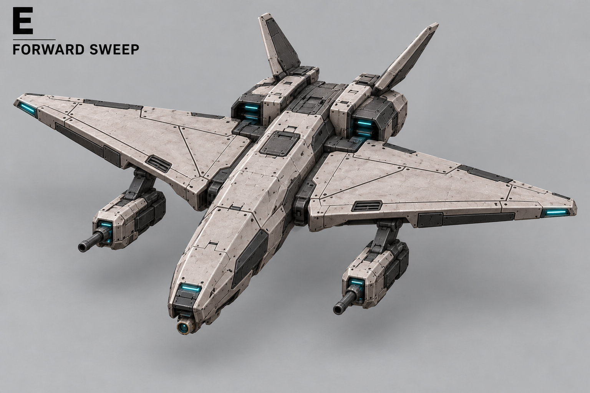
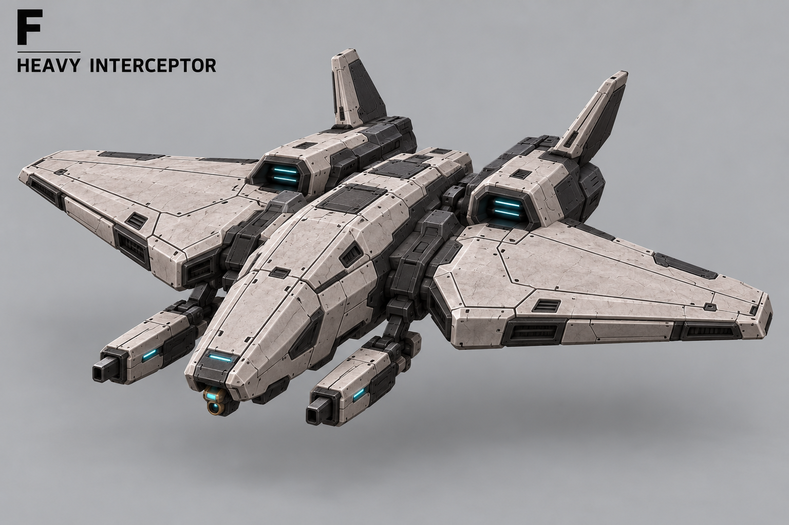

B — актуальная компоновка ракетниц

Актуальны верхние два листа: прямоугольные ракетницы частично встроены снизу в крыло, без подвесов, немного выступают вперёд. Ниже — история выбора.

Проверить точную геометрию по единому 3D-блокингу.






